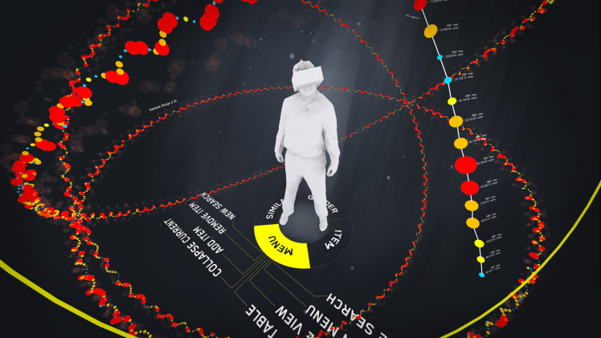

Can Virtual Reality Rescue Big Data?
The Big Data movement feels stalled. A Google search for “Big Data is dead” produces a lot of, well, data about the topic. What started as a noble idea, to capture all of the moving parts of our digital ecosystem and capture them as data points in a model to produce insights, turned into a movement. Seemingly overnight “Data Scientists” were everywhere and it was the job of the moment. But then that movement, and all of the promise it offered, turned into an IT hardware and software buying spree. New staff showed up, with skill sets executives didn’t even understand, to manage this new team or division. Words like regression and Hadoop were overheard in boardrooms when discussions of next years strategic plan were on the agenda. We told ourselves this data was the promised land. We simply needed to sit back, let the brains crunch some numbers with their shiny new toys, and the decisions would start to make themselves. Heck, we could even fully automate the decision making we thought, which would leave us all more time to count all of the money we were going to make. But then, like, nothing happened.